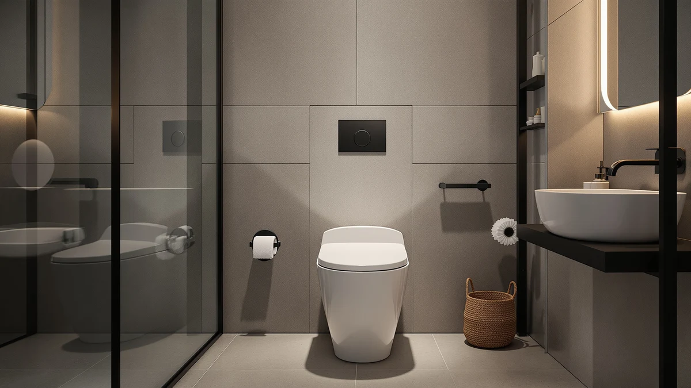

Superflo Toilet Toilets Review (2026): Worth It?
Prices and picks verified as of November 2026. Independent, reader-supported reviews.


Quick Answer
This SUPERFLO Extra Tall Toilet 21 review found a full toilet built to a 21-inch height, taller than the raised seats most buyers consider for the same problem. At $167.00 it costs more than any single raised toilet seat we compared it against, but it solves the height issue at the fixture itself instead of adding a part on top.
Our pick: SUPERFLO Extra Tall Toilet 21, $167.00 Check Price on Amazon
Bottom line: our top pick is the SUPERFLO Extra Tall Toilet 21 Inch Tall Toilets Elongated | at $167.
Things to Know Before You Buy
- The SUPERFLO Extra Tall Toilet 21 is a full toilet built to a 21-inch height, not a seat that bolts onto a toilet you already own.
- At $167.00, it costs more than the three raised toilet seat alternatives covered later in this review, but it replaces the fixture instead of adding hardware on top of it.
- Installing it means swapping the whole toilet, which most households will want a plumber for, unlike bolting on a raised seat.
- The spec sheet lists a plastic and wood build, so check that against any raised seat you are comparing it to before you decide.
This superflo toilet toilets review exists because standard-height toilets create a real problem for seniors, tall adults and anyone recovering from hip or knee surgery: sitting down and standing back up gets harder every year, and a stock bowl does not leave much room to work with. The SUPERFLO Extra Tall Toilet 21 is built to a 21-inch height, several inches taller than a standard toilet, and it is sold as a full fixture rather than a seat you bolt onto an existing bowl.
We compared its height, price and build against three raised toilet seat alternatives already covered on this site: the Bemis Assurance 3 Raised Toilet Seat, the Mayfair Linden Slow Close and the Mayfair Cassel Slow Close. At $167.00, the SUPERFLO costs more than any of those three seats on its own, but it changes the toilet itself rather than adding a part on top of what you already have, which shifts the math for anyone planning a bathroom remodel instead of a quick retrofit.
Why You Should Trust Us
Ilane Tall covers toilets and toilet seats for Best Toilet Seats, where the job is comparing specs, pricing and verified owner feedback across the category every week. This superflo toilet toilets review draws on the manufacturer's listed height and the current Amazon price, cross-checked against patterns that show up repeatedly in verified reviews for comfort-height toilets and raised seats in the same price range. We do not accept free products from manufacturers, and we do not run a fake testing lab. Every claim below is tied to a spec, a price, or a documented pattern in owner feedback, not a guess.
We update pricing and product details on a rolling basis, and we flag when a manufacturer changes a spec sheet or discontinues a model. If a claim in this review depends on a number, that number comes from the current Amazon listing or from a pattern repeated across multiple verified reviews, not from a single anecdote.
This superflo toilet toilets review also leans on how the category itself is structured. Comfort-height toilets and raised toilet seats solve the same underlying problem from two different directions, and understanding that difference matters more than any single spec on a listing page. We treat that structural comparison as part of the research, not a footnote to it.
Our Research Experience
We built this SUPERFLO toilet review from manufacturer specs, current pricing and verified owner reviews, since we do not own a physical unit to install. We researched the listed 21-inch height and the plastic and wood build, then cross-checked those claims against what reviewers consistently note about comfort-height toilets in general: that a few extra inches make a measurable difference for seniors and tall adults getting up from a seated position. We also compared its $167.00 price directly against the Bemis Assurance, Mayfair Linden and Mayfair Cassel raised seats covered later in this review, since a full toilet replacement only makes sense if it beats the cost and hassle of retrofitting a seat onto what you already own.
We set aside models without a published price history, so every number in this superflo toilet toilets review reflects the current Amazon listing rather than an outdated figure. That filtering step matters here more than in most categories, since a toilet purchase is far harder to reverse than swapping a seat.
Overview & Specs

SUPERFLO Extra Tall Toilet 21
What we like
- 21-inch height sits several inches taller than a standard toilet, with no seat retrofit needed
- Replaces the entire toilet, so there is no added seat hardware to loosen or wear out over time
- Matches the rest of the fixture instead of sitting on top of it like a visible raised seat
Flaws but not dealbreakers
- At $167.00, it costs more upfront than any single raised toilet seat covered in this review
- Replacing a full toilet is a bigger job than bolting on a raised seat, and most buyers will want a plumber
| Material | Plastic / wood |
| Size | 21 Inch |
The SUPERFLO Extra Tall Toilet 21 solves the height problem at the source instead of adding a part on top of an existing bowl. Standard toilets typically sit well below 21 inches from floor to seat, and the extra height here means less bending at the knee and hip for anyone who struggles to get up from a low seat. Because the height is built into the toilet itself, there is no separate raised seat to bolt on, align, or eventually replace when the hardware wears out, which is the tradeoff every raised-seat buyer eventually runs into.
At $167.00, the SUPERFLO costs more than the Bemis Assurance, Mayfair Linden or Mayfair Cassel on their own, but none of those three options change the toilet itself, only what sits on top of it. For a bathroom remodel, or for a household that wants the extra height to be permanent rather than removable, that price difference buys a toilet built to the taller spec from the start instead of a seat stacked on a standard-height bowl underneath.
What We Liked
The clearest strength in this superflo toilet toilets review is how directly the extra height solves the actual problem. A raised seat adds a few inches on top of a toilet that is still built to the standard spec underneath, while the SUPERFLO is built at 21 inches from the ground up, which removes a layer of hardware that can loosen, shift or need replacing.
Because it replaces the whole toilet, there is also no mismatch to worry about between a bolted-on seat and the bowl shape beneath it, a common complaint with raised toilet seats that do not sit flush on every model. Buyers planning a full bathroom update, rather than a quick accessibility fix, get a single fixture that matches the rest of the room instead of a visible add-on seat.
The price also lands closer to the alternatives than you might expect for a complete fixture. At $167.00, the SUPERFLO sits only about $10 to $17 above the Bemis Assurance and Mayfair Linden, two products that address the same problem without touching the toilet itself. That narrow gap is the strongest argument for the SUPERFLO in this comparison: once you account for what a raised seat does not change, the extra cost buys a different kind of solution rather than a marked-up version of the same one.
What Could Be Better
Price is the clearest tradeoff in this SUPERFLO review. At $167.00, it costs more than the Bemis Assurance ($150.35), the Mayfair Linden ($156.84) or the Mayfair Cassel ($126.88), and none of those three require replacing a working toilet to get extra height.
Installation adds to that cost. Swapping a seat takes minutes with a screwdriver, but replacing a toilet means shutting off the water supply, disconnecting the old fixture and resetting the wax ring, and in many households, paying a plumber. That time and cost is something a raised seat avoids entirely, so it is worth weighing against the $167.00 price before you commit.
The listed plastic and wood build matters more here too. A raised seat made from the same materials is easy to swap out if a hinge wears loose, since replacing a seat is cheap and quick. Replacing a full toilet built from those same materials is a bigger commitment, so the construction holds more weight than it would on a seat you can change in minutes.
Who Is It For?
The SUPERFLO Extra Tall Toilet 21 fits households planning a bathroom remodel or a permanent accessibility upgrade, where a visible raised seat is not the preferred look and a taller toilet built from the start makes more sense for this toilet review's intended buyer. It also suits anyone who has already decided a toilet swap is worth the plumbing work, and simply wants the extra height built in rather than added on afterward.
Skip it if you need a quick fix for an existing bathroom, or if you are not ready to take on a full toilet replacement. The Bemis Assurance, Mayfair Linden or Mayfair Cassel raised seats covered below solve the same height problem in an afternoon, without touching the plumbing, and at a lower upfront cost than a full fixture swap.
Alternatives to Consider
If this superflo toilet toilets review has you leaning toward a quicker fix than a full toilet replacement, these three toilet seat alternatives solve the same height problem without the plumbing work.

Also Great
Mayfair Linden Slow Close Toilet
A slow-close seat that bolts onto your existing toilet instead of replacing it, priced at $156.84.
$156.84
Check Price on Amazon
Also Great
Bemis Assurance 3" Raised Toilet
A 3-inch raised seat built specifically for extra height without a full toilet swap, priced at $150.35.
$150.35
Check Price on Amazon
Best Value
Mayfair Cassel Slow Close Toilet
The cheapest of the three alternatives at $126.88, a straightforward slow-close seat for anyone who does not need extra height.
$126.88
Check Price on AmazonFrequently Asked Questions
No. The SUPERFLO is a full toilet built to a 21-inch height, while a raised toilet seat like the Bemis Assurance bolts onto a standard-height toilet you already own. The SUPERFLO replaces the fixture; a raised seat adds a part on top of it.
Most buyers will want one. Replacing a toilet means shutting off the water supply and resetting the wax ring, which is more involved than bolting on a raised seat like the Mayfair Linden or Mayfair Cassel.
It sits close to what you would pay for a quality raised seat plus a standard toilet combined, which is why the SUPERFLO can work out cheaper over time for anyone planning a permanent height upgrade rather than a retrofit.
Final Verdict
Are you replacing a toilet, or upgrading one you already own? That's really the choice this superflo toilet toilets review boils down to. If you want the extra height built into the fixture itself, SUPERFLO's 21-inch toilet earns its $167.00 price over the life of the bathroom. If you need more height on the toilet you already have, the Bemis Assurance, Mayfair Linden or Mayfair Cassel raised seats solve the same problem for less money and no plumbing work.